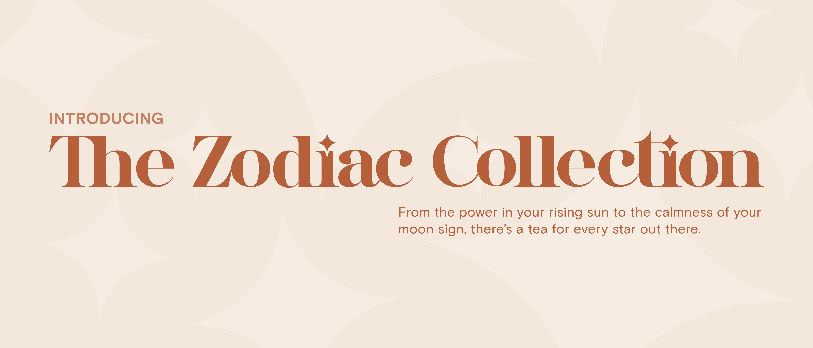
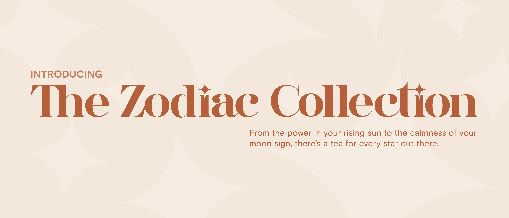
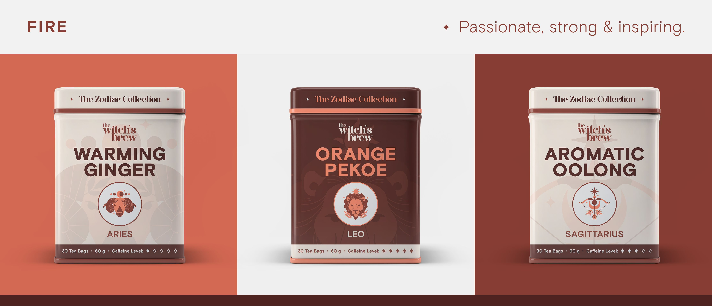
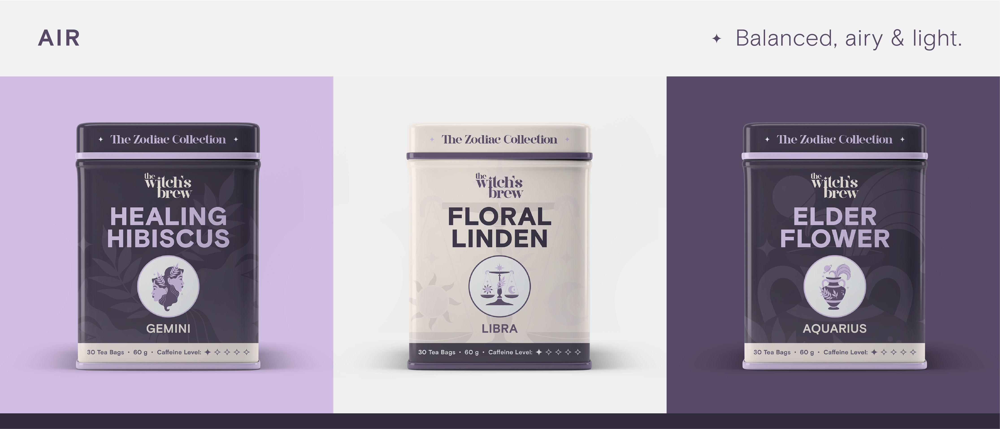
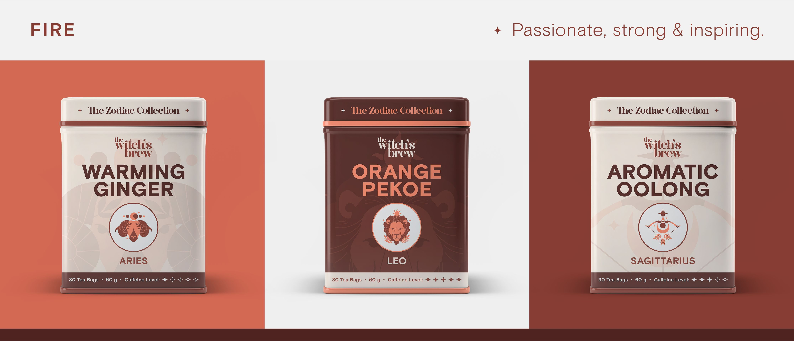
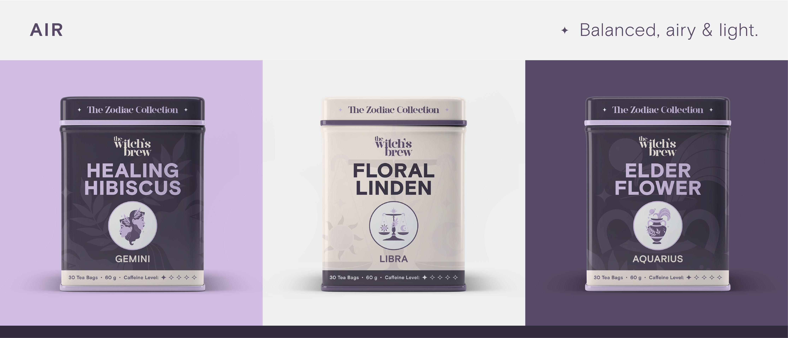

The Witch's Brew is a playful and light-hearted tea brand inspired by astrology, witchcraft and spirituality. It encourages drinkers to embrace the power of the cosmos and combine it with the herbal goodness of tea. In addition to the standard set of teas, The Witch's Brew also features a specialty series based on the twelve signs of the zodiac, called the Zodiac Collection. Each sign is assigned a type of tea that corresponds to the nature of their element — water, earth, fire and air.
Branding, graphic design, packaging.
Adobe / 2023


 


 


